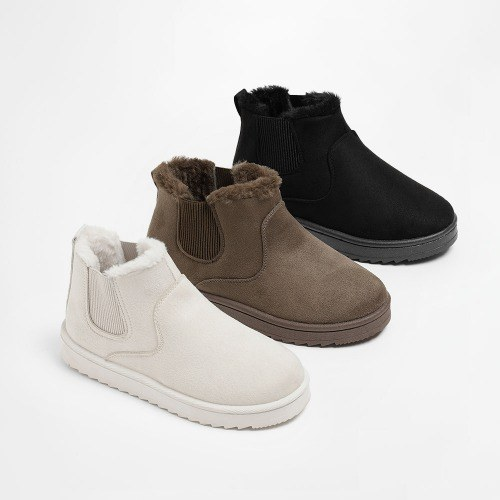
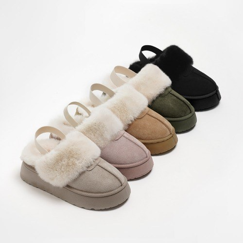
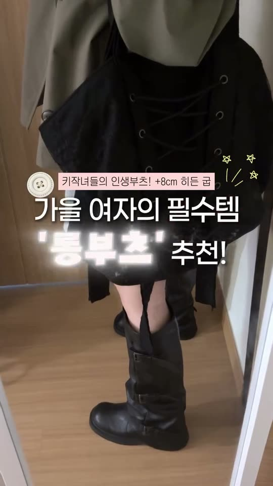
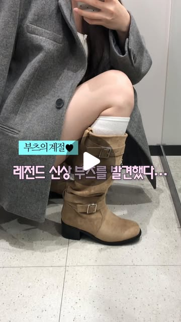

풀문 촬영 가이드 (내부용)
기준 영상(DdAKlUryihs) 하나를 뼈대로 6단계로 찍는다. 컷 전환과 구도는 기준 영상을 따르고, 우리 요소(+cm 재강조, 굽 집기 또는 한쪽 덜렁)를 넣는다.
촬영 가능 제품
 풀문키높이 퍼안감 방한 부츠 · 굽 7cm
풀문키높이 퍼안감 방한 부츠 · 굽 7cm(겉굽 3.5cm + 속굽 3.5cm)

클로이퍼안감 첼시 방한 부츠 · WTACR4c26129,900원

포븐퍼안감 밴딩 어그 슬리퍼 · WTSDR4f20635,900원
 시트롱퍼안감 플랫폼 방한화 · WTSDR4i177 / WTSDR4i181
시트롱퍼안감 플랫폼 방한화 · WTSDR4i177 / WTSDR4i18149,900원
같은 포븐 한 켤레로 한쪽 발은 밴드를 뒤꿈치에 걸고, 다른 쪽은 밴드를 빼고 신습니다. 걷기·계단·뒤꿈치 들기에서 실제로 보이는 차이를 그대로 담아 주세요.
그다음은 기존 흐름대로 착화·하반신 컷으로 이어갑니다.
이 영상 구조로 찍는다
ancotor._ · 세인트새틴 롱부츠 #광고 (2026-09-07) 원본 ↗
공유 4,546 · 저장 232 (서치폰 2026-11-20) · 좋아요 3,278 · 댓글 10
배경은 흰 문·거울·바닥뿐. 얼굴 없이 가슴 아래, 첫 프레임부터 신발이 보인다. 시작 글자에 +cm. 26.7초.
컷별 분석: research/fullmoon_guide_20261119/standard_DdAKlUryihs/분석.md · 아래 각 단계 예시는 이 영상의 해당 구간만 재생된다.
키워드 문구 + 키작녀 + +cm로 시작

기준 영상처럼 위에 작은 배지, 가운데 큰 제목 한 줄.
글자 예시겨울 필수템 '방한부츠' 추천!
"키작녀"와 "+7cm"(풀문 굽 7cm = 겉굽 3.5 + 속굽 3.5)는 반드시. 기준 영상의 +8cm는 복사하지 않는다. 글자는 상단 10%·하단 20%를 비운다.
2~3착장을 빠르게 컷 전환
같은 거울 앞, 가슴 아래부터 부츠 끝까지. 0.5~1초마다 착장만 바꿔 넘긴다. 1단계 글자는 그대로 유지.
착장은 짧은 하의 + 양말 강조(흰 양말 권장).
같은 자리에서 키 차이를 보여주며 +cm
기본: 같은 자리·같은 옷으로 플랫 → 풀문을 신고, 머리 높이에 기준선을 그어 "+7cm" 표시(홍서 방식, 우리 시딩 게시물).
대안: 허리 아래 컷에 "+7cm 히든굽" 글자만(기준 영상 방식).
홍서 영상은 무비 슬라우치 7.5cm. 풀문은 7cm로 적는다. 홍서 인사이트(11/2): 조회 7.1만·공유 986·저장 1.1천.
굽 집기 + 단면, 또는 한쪽만 신고 덜렁
(a) 굽 집기 + 단면
굽 집기신발을 들고 손가락으로 굽을 집어 가리킨다.
단면단면 샘플 또는 아래 단면 사진을 화면 가운데 크게 2초.
화면 글자서울 마포구 양화로 125 5층 착한구두
받는 분 콘텐츠기획 · 010-5595-5342

(b) 한쪽만 신고 덜렁
한쪽은 풀문, 한쪽은 양말. 허리 아래 정면 고정, 양말 신은 발을 들어 흔들어 높이 차이를 보여준다.
홍서 최종본은 1.9초에서 컷 — 덜렁 동작 전체가 이 구간에 있다. 자막 없는 클린본은 로컬에 없음.
옆모습 걸음 → 앉아서 통 근접 → 정면 걸음
무릎 아래를 낮게. 각 2~3초, 컷마다 한 줄 소구(통·디테일·굽 높이).
코디는 1벌로 충분. 바꿀 때만 착장마다 1~3초.
풀문 촬영 예시 · 다른 착화 구도 예시
oeksql5 · 공유 2.1만 · 저장 1.2만 원본 ↗
hyeanll · 공유 5,167 · 저장 6,499 원본 ↗
selfro_narae · 공유 1.1만 · 저장 1.4만 원본 ↗

uo_zuu · 공유 3,154 · 저장 3,294 원본 ↗
_lovesoon · 공유 6,040 · 저장 2.4만 원본 ↗
hyonyan9 · 공유 3,943 · 저장 202 원본 ↗
mirukku_joon · 공유 1,499 · 저장 5,023 원본 ↗
youandyoubin · 공유 1.7만 · 저장 7,313 원본 ↗
z00_daa · 공유 5,166 · 저장 4,513 원본 ↗
muse_yun · 공유 5,304 · 저장 1,898 원본 ↗
teum.zipp · 공유 397 · 저장 527 원본 ↗
ucan_kr · 공유 1,197 · 저장 1,301 원본 ↗
댓글 안내 + 혜택
부츠를 신고 서 있는 모습 2~3초(기준 영상은 허리 아래 + "자세한 정보는 캡션 확인").
화면 자막은 필수가 아니다. 댓글 유도는 화면 자막 또는 고정 댓글 중 하나면 된다.
자막으로 넣을 때링크 보내드릴게요
○○는 개인 가이드에 적은 댓글 키워드로 바꾼다. 글꼴·색은 자유.
다른 시작 (크리에이터가 다른 첫 장면을 원할 때)
본인 영상 중 공유·저장이 잘 나온 시작이 있으면 그걸 우선한다. 기존 시작 예시:


넣지 않는 것
신발이 작거나 가려지는 화면 — 전신 자체를 금지하지 않는다. 첫 화면에서도 신발의 형태가 보이게 거리와 하의 길이를 맞춘다. 얼굴+신발 안은 얼굴만 오래 보여주지 않는다.
상자 열기·포장 뜯기는 빼고, 1단계 첫 화면으로 바로 들어간다.
가방·옷이 신발을 가리지 않게 한다. 원본보다 어둡거나 배경이 산만하면 촬영 위치를 바꾸고 테스트 컷부터 확인한다.
본품 자르기 — 보낸 본품은 자르거나 안창을 빼지 않는다.
다른 신발 브랜드 이름·로고·상자, 유명인 이름, 저작권 음원은 넣지 않는다. 음악은 별도 안내가 없으면 생략 가능.
촬영 전 준비
준비물 · 촬영 전 연락
- 색상·사이즈를 받는다.
- 폰 받침대나 삼각대, 양말, 부츠가 잘 보이는 코디 한 벌을 준비하게 한다.
- 어떻게 찍을지 글 몇 줄이나 말로 먼저 받는다. 본인 기획안 양식도 가능. 확인 답변 후 촬영하게 한다.
- 초안 전달 날짜·게시 날짜·댓글 키워드를 확인한다.
- 6단계 순서, 3단계(기준선/글자)와 4단계(굽 집기/덜렁) 선택, 판매 가격을 확인한다. 촬영 전에 첫 화면을 짧게 찍어 보내 달라고 한다.
- 게시 시 @chaakan_kr 공동작업자 초대 가능 여부와 필요한 성과 확인 방법을 협의 내용에 적는다.
연락은 개인 가이드를 보낸 메일이나 대화방으로 받는다.